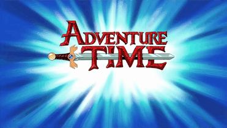
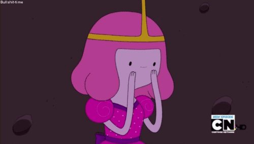

Introdução!
Bonnibel, mais conhecida como Princesa Jujuba ou Princess Bubleggum, é uma das personagens principais do cartoon Adventure Time (traduzido para o português como Hora de Aventura), que é transmitido no canal de televisão Cartoon Network. É a princesa do Reino Doce, entretanto, perdeu sua coroa para o impostor Rei de Ooo, além de ser uma incrível cientista e inventora, capaz de criar desde seres vivos, como os habitantes de seu reino, até máquinas de grande porte, como os guardiões de chiclete e foguetes, também consegue produzir um exército de guardas para proteger a paz em Candy Kingdom. Embora possua mais de oito séculos de vida até agora, ou seja, uma vida demasiadamente longa, é limitada, isto é, seu tempo vivendo é grande, mas poderá acabar, por isso, criou Goliad para viver eternamente e governar em seu lugar. A existência de tal ser prova que suas habilidades científicas são esplêndidas. Bubblegum retém uma incrível capacidade para criar aparelhos inovadores, muitas vezes, em tentativa de espionar os moradores de outros reinos como a Princesa de fogo, Rei Gelado, entre outros. Junto de Fin, Jake e Marceline, está sempre em aventuras estranhamente loucas que podem estar relacionados a uma destruição em massa ou, simplesmente, a uma descoberta útil para seus estudos e pesquisas, entretanto, costuma ficar bastante no seu castelo criando maneiras para manter os subordinados a salvo, evitando a destruição do reino que construiu, agindo como uma mãe para todos no local.
Sobre a Obra!
Adventure Time é um desenho animado criado por Pendelton Ward para ser exibido no canal infantil Cartoon Network e fez bastante sucesso no mundo geek, tanto para crianças quanto para adultos. Seu episódio piloto foi lançado em 11 de janeiro de 2007, o original em 5 de abril de 2010, e continua sendo exibido até os dias atuais, contando com 266 episódios no total, com cerca de 11 minutos cada um, divididos em 9 temporadas, além de especiais, minisséries e um filme ainda em produção. A série já recebeu indicações para diversos prêmios diferentes, com duas vitórias no Annie Awards, uma no Emmy do Primetime, entre alguns outros. A animação ganhou diversas adaptações para quadrinhos, livros e jogos originais, grande parte produzida pela própria Cartoon Network. Além de uma obra completamente intrigante com diferentes caminhos percorridos por todos os personagens da série, mostrando uma grande quantidade de experiências vividas por Fin e Jack, os protagonistas que recebem maior foco em Adventure Time, esses que lutam para salvar seus amigos de situações complicadas ou partem em excursões para encontrar novos objetos mágicos ou espadas com habilidades especiais.
A Ciência!
Bonnie, por algum motivo, possui fascínio pela ciência, e tal fato fez com que se tornasse um gênio, o que ajudou-a a constriur um reino inteiro feito de doce e suas centenas de habitantes, todos feitos com algum tipo diferenfe de iguaria, sendo líquido ou sólido, para beber ou mastigar. Ela também possui vários feitos científicos, podendo ser considerada a mais inteligente de Ooo, sendo que é capaz de transformar objetos em alimentos, criar coisas vivas usando biomassa, além de máquinas e equipamentos para guerras e seus estudos, grande parte úteis na rotina de alguém como ela. Foi mostrado que Jujuba é capaz de criar grandes estruturas, como foguetes, e um exemplo que pode ser citado são seus guardiões de chiclete, criaturas de grande porte que protegem Candy Kingdom. Isto não é tudo, pois ficou explícito que produziu dois tipos de exércitos diferentes: um de máquinas de chiclete e outro de bananas, entretanto, o primeiro grupo foi destruído pela própria criadora, por ser muito violento, restando apenas Chicletão.
Origem!
Séculos atrás, após a Grande Guerra dos Cogumelos, uma espécie de massa rosa surgiu naquele cenário pós-apocalíptico, e foi dessa goma que surgiu Bonnibel Bubblegum e seu irmão, Neddy. A princípio, era bem pequena, demasiadamente menor do que é hoje, seu formato também era diferente, parecido com uma gosma em formato de lesma. Com o passar dos anos, sua biomassa foi aumentando, fazendo-a evoluir cada vez mais. Não sabe-se quantos anos passaram-se até Jujuba dar início à construção de Candy Kingdom, porém, é evidente que já estava em sua fase adulta. Certo dia, uma ladra, Shoko, com o objetivo de roubar um colar da princesa, invadiu seu reino ainda em construção, e se tornou amiga de Bonnie; a cientista, como prova de sua amizade, projetou um braço para substituir o que faltava. Em uma noite, a garota invadiu o quarto de Bubblegum e roubou seu colar, entretanto, um dos guardiões de chiclete atirou na intrusa que, consequentemente, tropeçou, caindo em ácido, e foi rastejando ao local em que a casa de Finn e Jake se localiza, morrendo lá. Com o Reino Doce já construído, em seu laboratório, a personagem criou Lemongrab, um experimento que deu errado, sua personalidade saiu "deformada", então, por ser diferente, ele fugiu e criou seu próprio reino.